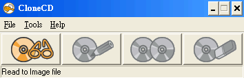
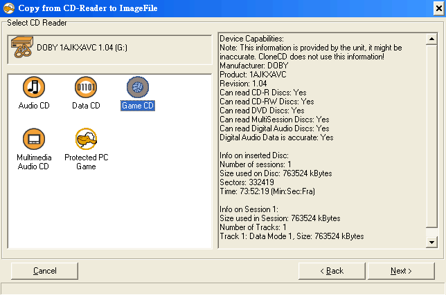
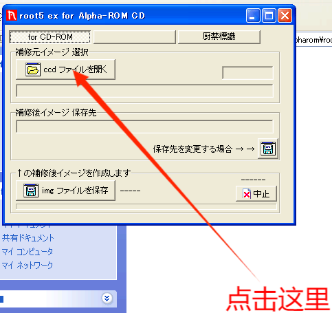
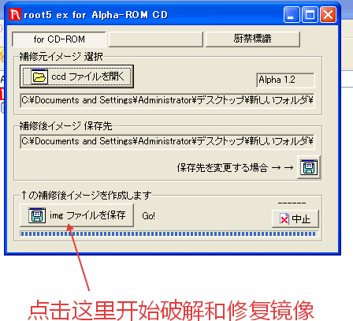

原著：朱峰
Alpha ROM保護之光碟檔製作流程為： 1.使用Clone CD燒錄成ccd光碟檔格式（不可使用其他燒錄軟體）。 2.使用Alpha ROM專用的修補程式進行修補（本文採用root5_ex）。 相關軟體可在 [遊戲工具與更新檔\一般工具\燒錄工具] 下載，建議使用虛擬機+XP進行燒錄。 一、Clone CD燒錄 1.放入光碟，啟動Clone CD後，按下最左邊的按鈕，或選擇［Read to File］功能。

2.選擇Game CD，按下［Next］按鈕，然後一路到燒錄成ccd光碟檔。
二、root5_ex修補 1.啟動root5_ex修補程式，按下上方ccd開頭的按鈕，選擇前述燒錄的ccd光碟檔。
2.按下下方img開頭的按鈕，進行Alpha ROM保護相關的修補（需放入原版光碟）。
3.測試修補完成的光碟檔（檔名名稱會附加.Alpha），確認是否可通過Alpha ROM保護檢測。